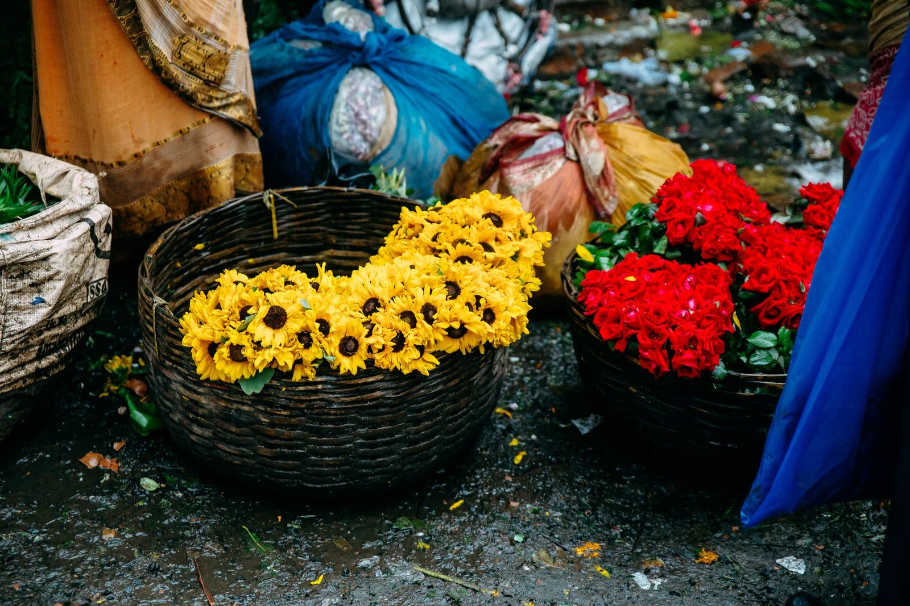
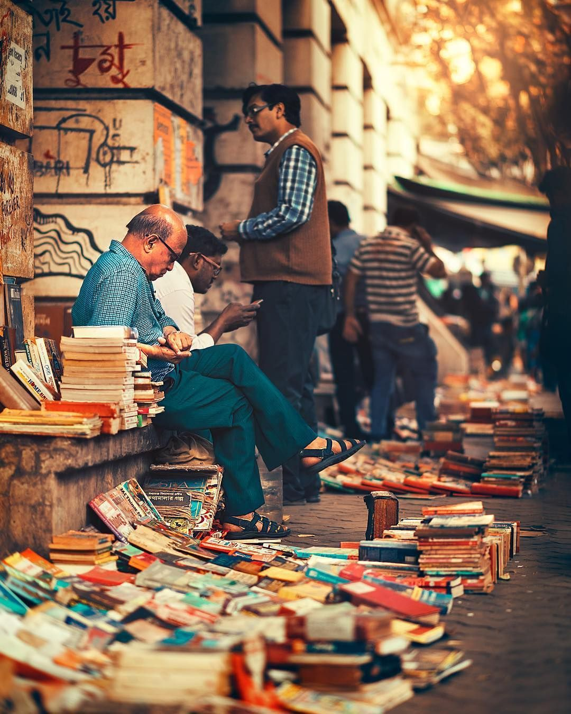

Kolkata

Also known as the "City of Joy".The people of Kolkata have a knack for festivities and all things fun. They know how to enjoy life. The city is rich in history and culture. Kolkata was the capital of the British Empire for a long time. Buildings in Kolkata’s old part follow British architecture.
Food, art, culture, music, shopping– you name it, and Kolkata has it. Every corner of Kolkata reeks of art and culture. Throughout the year, flocks of tourists gather around Kolkata to indulge in the artistic atmosphere of Kolkata. The old-world charm of this city is really intoxicating. No wonder it’s the city of intellectuals like Rabindranath Tagore, Satyajit Ray, and many more prominent authors, novelists, artists, and directors.
So, let’s dive into the world of art and music through this ultimate Kolkata travel guide that includes unique places to visit in Kolkata, when to visit, how to travel, where to stay, what to eat, etc:
Unique Places to Visit In Kolkata
Delve into the architecture of the Victoria Memorial

Victoria Memorial is one of the most unique places to visit in Kolkata. It is a memorial building near Maidan, Kolkata. It was built in memory of Queen Victoria after she died in 1901. Lord Curzon proposed the idea of a memorial to commemorate the life of Queen Victoria. It is one of the most famous tourist attractions in Kolkata. The building is made of exquisite white marble which looks gorgeous inside out. The architecture follows the Indo-Saracenic revivalist style and is truly breathtaking. Currently, it is a museum under the governance of the Ministry of Culture, India. You can get on the Metro to reach Victoria Memorial. It’s just a 5-minute walk from Esplanade Metro Station to Victoria Memorial.
Explore St. Paul’s Cathedral

St Paul’s Cathedral is one of the first churches built by the British in Kolkata in 1847. It is just a stone’s throw from the Victoria Memorial so you can visit these two places at once. Its Indo-Gothic architecture is most attractive and fits the surroundings. St. Paul’s was dedicated to Paul the Apostle. The cathedral looks fantastic from a distance and magnificent from up close. You can take a bus from Howrah or Sealdah Station or the metro from Rabindra Sadan or Maidan. It’s just a 7-8 minute walk to the Cathedral from Rabindra Sadan. Birla Planetarium, Rabindra Sadan Complex, and Academy of Fine Arts are near St. Paul’s Cathedral.
Howrah Bridge
Howrah Bridge is one of the most unique places to visit in Kolkata. It is considered as the face of Kolkata. No one visits Kolkata and fails to catch a glimpse of Howrah Bridge. This architectural excellence is made of steel. Howrah Bridge connects Kolkata with Hoogly. It is built over the Hoogly River. Yellow cabs are kind of a legacy of Kolkata. Almost all the movies and pictures about Kolkata feature yellow cabs on them? That’s how famous the yellow cab in Kolkata is. You can easily hire a yellow cab to reach Howrah Bridge after you visit Victoria Memorial and St. Paul’s Cathedral. It will cost you 100 rupees only.
Shop at New Market
So, let’s be honest. Shopping is our first priority when we’re in Kolkata. And when we put the two words “Kolkata” and “shopping” together, the first thing that comes to our mind is its center of shopping- New Market. Kolkata is a shopping paradise for Bangladeshis. We love to shop in Kolkata because of its rich collection and low prices. It has become a trend to shop for your wedding in Kolkata nowadays. The New Market is actually not so new. It was built around 1873 by the British. The Victorian Gothic architecture of the building is gorgeous. New Market is Kolkata’s most prominent market where you can buy everything from clothing, accessories, and shoes to food, electronics, daily utensils, etc. It is the number one go-to place if you are in Kolkata. The prices are very reasonable, and the collections are exhaustive. But do bargain.
Buy Flowers from Mullick Ghat Flower Market
Mullick Ghat Flower Market is a 130-year-old flower market in Kolkata which supplies flowers throughout India and even Europe. This is the biggest flower market in Asia. It is right under the Howrah Bridge over the Hoogly River. Visit the market to soothe your eyes with millions of flowers which is a visual experience. If you’re a photography buff, then this is the perfect place for some excellent clicks. Visit the market early in the morning around 7-ish. That way you will be able to take a glimpse of untouched and vibrant flowers and 2000 vendors who sell them to the local businesses and temples.
Flip Through Books at College Street
Stretching across 1.5 kilometers, the biggest second-hand book market in the world is also in Kolkata. It’s College Street Book Market– famously called “Boi Para”. Here you can get any book at the most inexpensive price. People also come here to simply sit and read a book. Most of the stalls here are makeshift ones. Besides, there are a few renowned publishing companies and their book stores on College Street which have been here for a long time.
Visit The Grand Marble Palace
It’s a 10-minute walk from Jorasanko Thakur Bari to Raja Rajendra Mullick’s grand mansion– Marble Palace. Marle Palace is a massive building made of more than 126 types of marble. It is full of an exquisite collection of statues, sculptures, portraits, mirrors, paintings, furniture, chandeliers, showpieces, and many more. Raja Rajendra Mullick was not just a wealthy tradesman, he had an excellent taste in art and artistry. The enchanting mansion is private property so pictures are not allowed during the visit. Tourists must collect a permit from the West Bengal Tourism Information Bureau 24 hours before the visit. The palace serves as a residence, a museum, and India’s only private zoo.
Take a walk through Park Street

Park Street is a historic street in central Kolkata where important landmarks like St. Xavier's College, Loreto College, Asiatic Society, South Park Street Cemetery, Française du Bengale, and The Park Hotel are situated. South Park Cemetery is a burial site where the tombs of major figures from the British Empire and some Europeans are. It is a primary tourist spot on Park Street. It is also one of the most haunted places in India, so watch out for ghosts, apparitions, and all things supernatural! The nightlife of Park Street has always been one of Kolkata’s main attractions since the British Era and it is one of the most unique places to visit in Kolkata. it is a major business and recreation area in Kolkata. Trinca's, Oly Pub, Peter Cat, Mocambo, Blue Fox, and Moulin Rouge are Park Street’s most famous dining and night recreation spots. It is a tradition of Park Street to decorate itself on Christmas, Diwali, and New Year's.
What Food is Famous in Kolkata?
When it comes to food, Kolkata has a variety of dishes and restaurants for you to try. The most famous food dishes in Kolkata include Macher Jhol, Biryani, Kosha Mangsho, Luchi - Alur Dom, Shukto, Kebab, Mochar Ghonto, etc. Among all the restaurants in Kolkata, Aminia Biriyani serves the best biriyani in town, so don’t forget to check out one of the most unique places to visit in Kolkata. Fuchka or Panipuri are traditional street foods of Kolkata, and they are mouthwateringly delicious. Besides them, Kolkata has a range of options for street food like Momos or dumplings, Kati Roll, Chhanar Jilipi, Telebhaja, Ghugni Chaat, Dimer Devil, Doodh Cola, Jhalmuri, etc. Try them on your evening strolls and get ready to be exposed to a wide range of flavors.
When Is The Best Time To Visit Kolkata?
The best time to visit Kolkata is during winter when Kolkata weather remains dry and chilly. It is perfect for sightseeing. So try to visit Kolkata from October to March. Kolkata temperature is very hot and humid during summer, so you should avoid visiting Kolkata from April to May as the heat will make you tired and unfit for sightseeing.